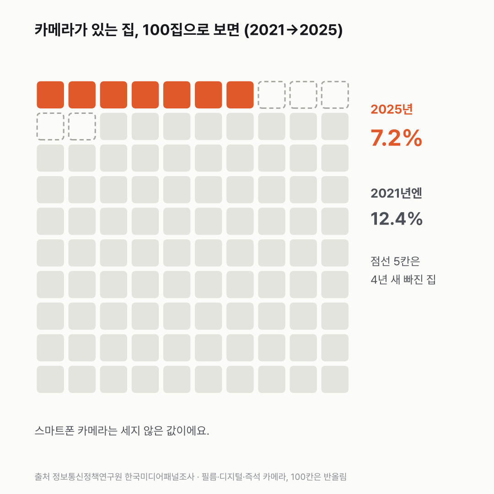
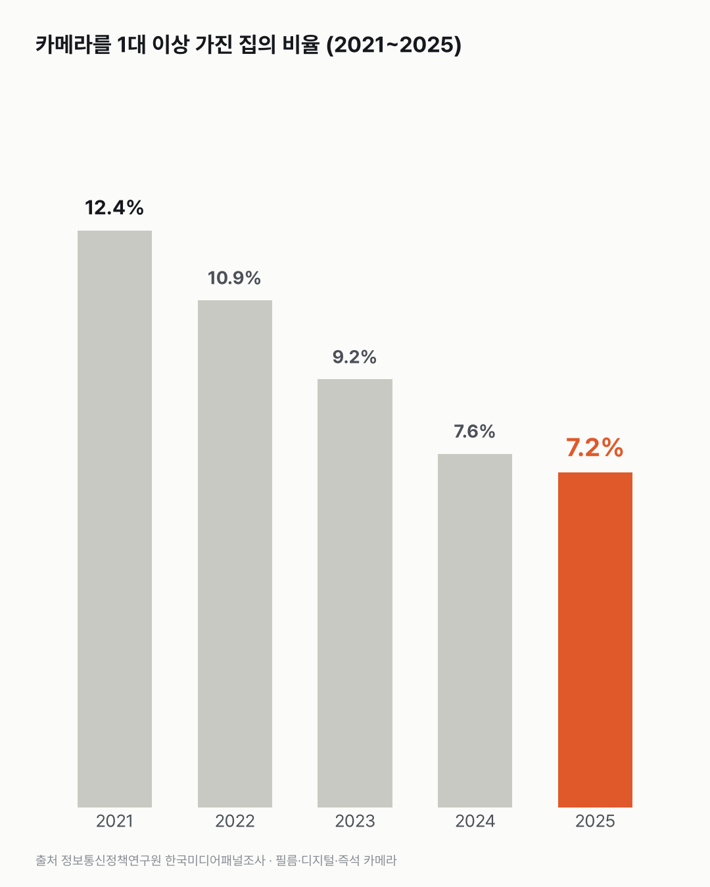
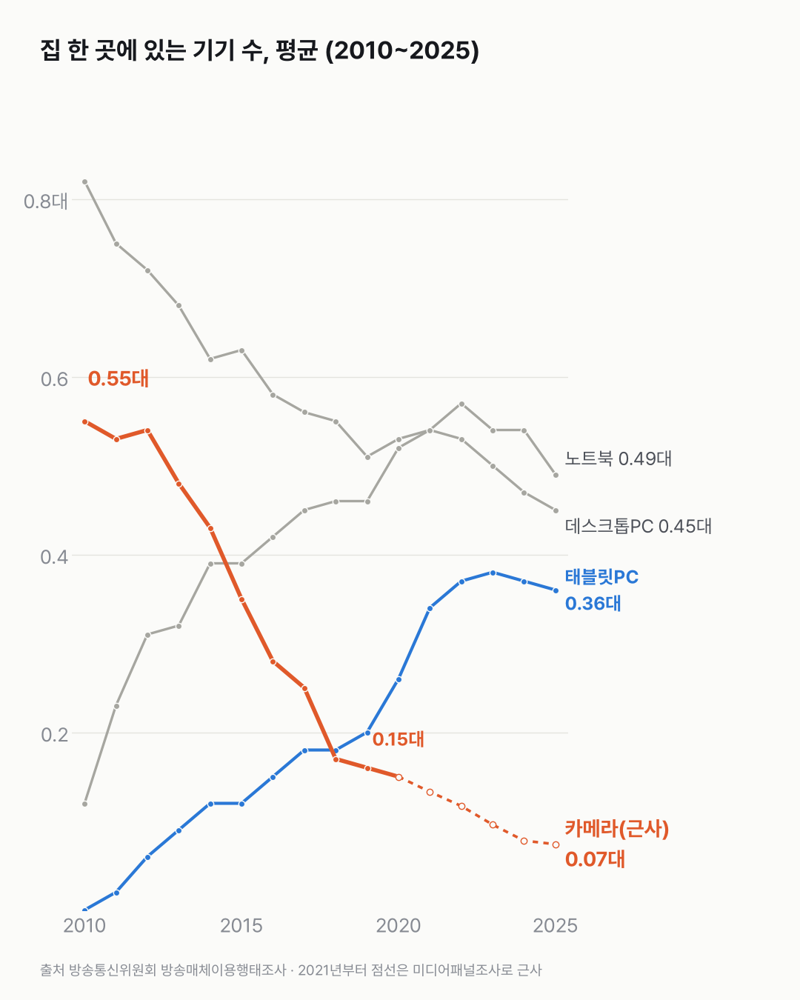

휴대폰 말고 카메라 있는 집, 이제 100집에 7집
2010년엔 두 집에 한 대 있던 카메라를, 이제는 열 집에 한 집도 갖고 있지 않아요. 그 사이 노트북과 태블릿이 카메라 대수를 앞질렀어요.

- 2025년 카메라를 1대 이상 가진 집은 7.2%예요. 100집에 7집이에요.
- 2021년엔 12.4%였고, 그 뒤 해마다 줄었어요.
- 가구당 디지털카메라는 2010년 0.55대였는데, 2020년엔 0.15대가 됐어요.
서랍 맨 아래 칸, 충전기 줄 사이에 작은 디지털카메라가 굴러다녀요. 마지막으로 충전한 게 언제였는지 잘 떠오르지 않는 물건이죠. 한국미디어패널조사는 필름·디지털·즉석 카메라 중 하나라도 있는지를 집마다 물어요. 2025년엔 100집에 7집이 있다고 했어요. 2021년 12.4%에서 해마다 줄었어요. 솔직히 놀랐어요. 열 집에 한 집은 넘을 줄 알았거든요.

2010년으로 거슬러 올라가면 숫자가 꽤 달라요. 방송매체이용행태조사로 보면 가구당 디지털카메라는 2010년 0.55대, 두 집에 한 대 정도였어요. 2020년엔 0.15대로, 10년 새 약 73% 줄었어요.
그 사이 노트북은 2015년, 태블릿은 2018년에 카메라를 앞질렀어요. 가구당 노트북은 2010년 0.12대에서 2025년 0.49대가 됐어요. 태블릿은 2010년엔 거의 없다가 2025년 0.36대예요. 데스크톱은 0.82대에서 0.45대로 줄었어요.

이 흐름은 두 조사를 이어 붙인 거예요. 방송매체이용행태조사의 카메라 문항이 2020년에 끝나서, 2021년부터는 한국미디어패널조사를 썼어요. 미디어패널의 보유 대수로 가구당 대수를 어림하면 2021년 0.13대. 방통위 2020년 0.15대와 크게 어긋나지 않았어요. 물론 스마트폰 카메라는 어느 조사에도 들어 있지 않아요.
남은 7집의 카메라는 지금도 쓰일까요, 서랍에 있을까요? 조사는 '있다'까지만 물었어요.
이 숫자는 어디서 왔나요
출처
어떻게 셌나요
- 두 조사 모두 표본조사예요.
- 2010~2020년은 방송매체이용행태조사의 가구당 평균 보유 대수예요. 집집마다 가진 대수를 평균 낸 값이라, 0.55대는 두 집에 한 대 정도라는 뜻이에요.
- 2021~2025년은 한국미디어패널조사의 보유율이에요. 필름·디지털·즉석 카메라 중 하나라도 있는 집의 비율이에요.
- 방통위의 카메라 문항이 2020년에 끝나서, 2021년 가구당 대수는 미디어패널의 보유 대수 분포로 어림했어요. '3대 이상'처럼 끝이 열린 칸은 3대로 쳐서 실제보다 조금 낮게 잡혀요.
한계 5가지
이 데이터로 말할 수 없는 것
- 두 조사를 이었어요. 방통위의 디지털 카메라 문항이 2020년에 없어져, 2021년부터는 다른 조사(미디어패널)의 근사값을 점선으로 이었어요. 표본, 문항, 카메라의 범위(미디어패널은 필름·즉석사진기 포함)가 달라요.
- 스마트폰은 없어요. 스마트폰 카메라는 이 비교에 들어 있지 않아요. "스마트폰 때문에 카메라가 줄었다"는 이 데이터로 말할 수 없어요. 같은 시기에 함께 움직였다는 패턴만 있어요.
- 가구 단위예요. 개인이 카메라를 갖고 있는지, 실제로 쓰는지는 알 수 없어요.
- 표본조사예요. 2024년 7.6%와 2025년 7.2%처럼 작은 차이는 표본 오차일 수 있어요.
- 판매량은 아니에요. 카메라 시장(고급 미러리스 등)이 줄었는지는 별개의 질문이에요.
계산 기록
쓰기 전에 정한 것
- 처음엔 방통위 조사의 카메라 보유율을 미디어패널과 같은 해끼리 맞춰 보려 했어요.
- 받아 보니 방통위 값은 보유율이 아닌 가구당 대수였고, 카메라 문항도 2020년에 끝나 두 조사가 겹치는 해가 없었어요. 그래서 방통위는 대수로, 보유율은 미디어패널로 보고, 2021년 대수를 어림해 두 조사가 이어지는지 확인했어요. 쓰는 중에 바뀐 거라 여기 적어 둬요.
- '스마트폰 때문에 줄었다'고는 쓰지 않고, 같은 시기에 움직였다는 패턴만 말하기로 미리 정했어요.
처음 던진 질문
서랍 맨 아래 칸, 충전기 줄 사이에 굴러다니는 작은 디지털카메라. 휴대폰 말고 카메라가 집에 아직 있는지 세어 본 조사가 있어요. 두 조사를 이어서 2010년부터 2025년까지 열어 봤어요.
수집·검증 기록
- 표: KOSIS DT_001, DT_405001_H039, DT_405001_H040. 수집일 2026-10-29 (KOSIS 오픈API). 둘 다 표본조사.
- 근사 계산: 가구당 대수 ≈ Σ(대수 × 해당 비율). '3대 이상'처럼 열린 구간은 하한값을 써서 실제보다 약간 낮게 잡힘.
- 검증: 미디어패널 '있다 + 없다 = 100%' 확인.
- 연결 확인: 방통위 2020년 0.15대, 미디어패널 근사 2021년 0.13대로 두 조사가 크게 어긋나지 않음.
- 차트의 100칸은 보유율을 반올림(2025년 7.2% → 7칸, 2021년 12.4% → 12칸, 점선 5칸 = 12 − 7). '100집 중 7집'도 7.2%를 어림한 말. '약 73% 감소' = (0.55 − 0.15) ÷ 0.55.
새 글 나오면 받아 보기
피드 리더 앱에 이 사이트 주소를 한 번 넣어 두면, 새 글이 올라올 때 앱에 떠요. 가입이나 메일 주소는 필요 없어요.
받는 법 보기
- 피드 리더 앱을 하나 골라요. 새 글을 모아 보여 주는 앱이에요. 예를 들면 Feedly나 Inoreader가 있어요. 둘 다 무료고 웹·휴대폰에서 써요.
- 앱에서 '구독 추가'(+)를 누르고 아래 주소를 붙여 넣어요.
- 끝이에요. 새 글이 올라오면 앱 목록에 떠요.
https://protofu.github.io/opendata-insight/feed.xmlFeedly를 쓴다면 여기를 눌러 바로 추가할 수도 있어요.